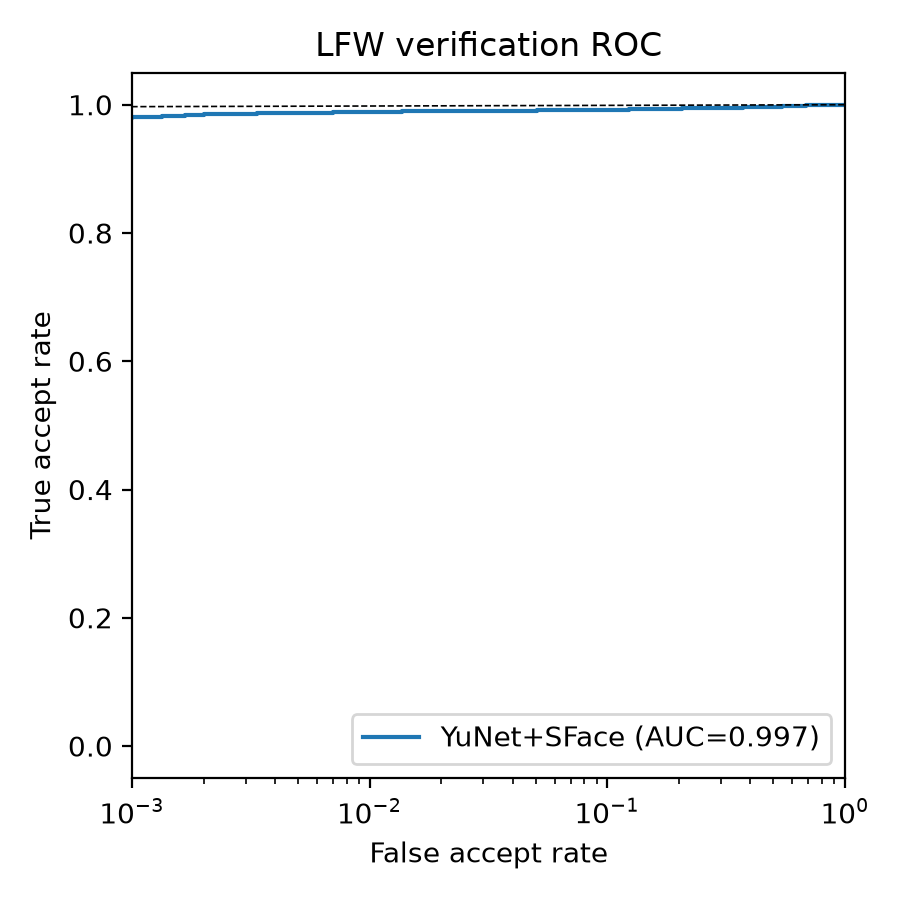

Moeez Ahmed
BS Computer Science, COMSATS University Islamabad, Lahore · CGPA 3.72 / 4.00
I want to grow into an independent researcher, learning research methods under expert supervision in a master's programme in China. My interests are machine learning, computer vision, large language models and cybersecurity. What I care about most is making models reliable: rigorous evaluation, calibration, and knowing where a system breaks.
Research interests
Coursework: 4.00 / 4.00 in Machine Learning, Linear Algebra, Algorithms and Information Security; 3.66 in Artificial Intelligence. Final Year Project 4.00, supervised by Prof. Dr. Zulfiqar Habib.
Multi-camera face-recognition attendance system
Pipeline
Camera frameYuNet detection5-point alignmentSFace 128-d embeddingCosine match
Each camera runs in its own worker thread; a shared inference thread embeds detected faces and compares them with enrolled identities (multi-image embeddings are averaged per person). Detection and recognition both use Apache-2.0 models from the OpenCV Zoo, run through cv2.dnn. I replaced an earlier non-commercial-licensed model (InsightFace buffalo_l) after auditing the licences of the model weights and their training data, accepting a lighter model in exchange for a deployable one.
Benchmark: LFW verification
Standard 6,000-pair, 10-fold protocol. The threshold is chosen on nine folds and scored on the held-out fold. Reproducible with a single script; 0 of 6,000 pairs had no face detected.

Threshold calibration from field failures
Benchmark accuracy did not transfer cleanly to live cameras: people at a distance were misidentified. I recalibrated the matching threshold 0.36 → 0.51 → 0.46, analysing the false-accept versus false-reject trade-off through inter-class and intra-class similarity margins. At the deployed threshold of 0.46 the LFW result is 0 false accepts in 3,000 impostor pairs at a 5.5% false-reject rate. I also compared the lightweight-versus-accuracy trade-off of SFace against ArcFace-class models.
Security of the surrounding system
Tenant isolation uses PostgreSQL row-level security (17 policies, non-owner application role), checked by 10 adversarial tests across 8 cross-tenant attack classes. That testing found and fixed an RLS policy that enforced nothing and a rate-limit bypass via a spoofed X-Forwarded-For header. Also: refresh-token rotation, HttpOnly cookies, breached-password checks, and a backup restore drill.
Limits, stated plainly
- LFW is an easy, near-frontal benchmark with pre-cropped faces. Read the result as "99.1% on LFW", not "99% accurate" in general.
- SFace is a pretrained OpenCV Zoo model. I evaluated and calibrated it; I did not train it.
- 0 false accepts in 3,000 pairs bounds the true rate at roughly 0.1% (95% confidence).
- The real deployment is a handful of people on a few cameras. Larger-scale load tests (37,500 simulated identities, 150 devices) measured the backend, not recognition accuracy.
TABEEB: LLM-based multimodal report analysis
A pipeline that accepts scanned images, PDFs and text and returns patient-readable summaries flagging values outside reference ranges. I studied prompt design and decoding control in a high-stakes domain (low temperature for factual summaries, higher for conversational Q&A) to find where factual fidelity breaks down, and cut token usage by about 30% with context summarisation. The retrieval-augmented design lets the model format only retrieved facts, with labelled estimates as a fallback, and works across model families (Gemini and Gemma), which showed how instruction following varies between models.
Open problems I want to work on: faithfulness of LLM summarisation, evaluating output without ground truth, and low-resource Urdu–English NLP.
Experience & education
Designed, built and field-tuned the face-recognition system above. Own the HR and Finance modules of a company-wide ERP.
Fixed data-synchronisation problems in a production e-commerce wish-list feature; designed the product, order and inventory schema.
CGPA 3.72 / 4.00; 4.00 in Semester 7 including the Final Year Project.
Traffic signal detection in MATLAB (Computer Vision course) · peer-to-peer file-sharing service with custom peer discovery.
Skills: Python, MATLAB, SQL · PyTorch, scikit-learn, OpenCV · ROC / EER / TAR@FAR evaluation, threshold calibration · LLM APIs, prompt design, RAG · Git, Docker.
Contact
Email moeez4316@gmail.com · WeChat moeez_ahmed · github.com/moeez4316 · Lahore, Pakistan